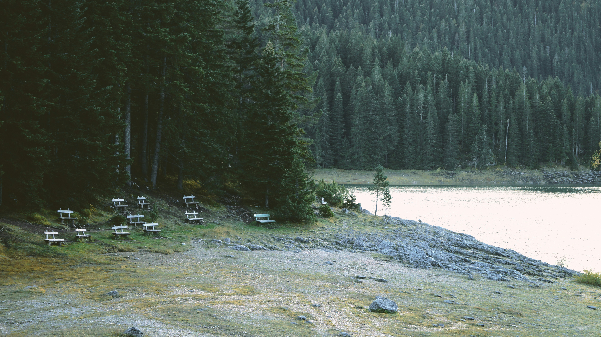

Hallo IndieWeb & Fediverse: Webmentions und GotoSocial
June 29, 2026

Es wird Zeit, dass ich diese Site mit IndieWeb-und Fediverse-Merkmalen ausstatte. Ich habe in 2021 hier wieder angefangen, einigermaßen regelmäßig zu bloggen. Damals hatte ich aufgeschrieben, dass ich mich für einen statischen Seitengenerator entschieden habe. Ich wollte mich aus der Pflicht zu wöchentlichen Software-Updates befreien. Das Argument gilt immer noch. Der Ivy-Seitengenerator heißt nur inzwischen Ark, sonst hat sich bis gestern am Setup aber nichts verändert.
Die Beiträge sind in Markdown (mit Frontmatter für ein paar Metadaten) geschrieben. Alles, was man zum Bloggen braucht, ist da. Ark & Holly machen daraus ansehnliche Artikel- und Übersichtsseiten.
Kolophon. Das Setup hinter olav.net
Der Generator Ark von Darren Mulholland
Die Quellen meines Blogs auf Github
Was mit bisher fehlte war allerdings eine bessere Einbindung ins IndieWeb und Fediverse. Das möchte ich jetzt nach und nach ändern, ohne allerdings wieder zurück zu einem datenbank-basierenden CMS (Content Management System, Redaktionssystem für Websites) zu gehen.
Weiter möchte ich damit beginnen, neben dem Web auch in den Gemini Space zu publizieren. Wer es nicht kennt: Der Gemini Space basiert auf Textdateien in einer Art schlankem Markdown und einem stark vereinfachten Protokoll. Zum Lesen braucht man einen anderen Browser. Ich benutze Lagrange. Das ist superelegant, rattenschnell und auf all meinen Geräten verfügbar.. Dazu bekommt man ein textorientiertes Medium (gut!) ohne Bloat, Werbung oder Tracking. Es ist eine Art Alternate History des Web - only the good bits.
Die menschliche Alternative zum "Corporate Web"
Auch im Gemini Space gibt es Online Communities. Die Größte wird vom Lagrange-Entwickler betrieben. Ich habe die Software ebenfalls installiert. Daneben gibt es Weblogs (dort: Gemlogs), Suchmaschinen, Aggregatoren, Hoster, Interactive Fiction, Anbindung ans Fediverse. Es ist einfach ein schönes Paralleluniversum, von dem ich mit diesem Blog gerne ein Teil sein möchte,
Meine Präsentation zum Geminispace vom letzen Herbst
Das Gemini BBS von Lagrange-Programmierer Jaakko "skyjake" Keränen
Mein eigenes Bonner Bubble-Café ("Bubble" ist die Software)
Aber ich schweife ab. Publizieren nach Gemini ist tatsächlich noch gar nicht implementiert. Die Entscheidung in diese Richtung bedeutet aber, dass ich diesen Text hier jetzt in Gemtext schreibe. Wie gesagt, dass ist eine vereinfachte Form von Markdown. Sie kann direkt (anders als Markdown) im Lagrange-Browser angezeigt werden und einfach nach Markdown gewandelt werden zur Veröffentlichung per Ark & Holy ins Web.
Für die geplante Integration ins IndieWeb über Webmentions und ins Fediverse über Integration mit meiner Mastodon-Node unter https://social.schettler.net brauche ich mehr als statische Seiten. Ich habe daher unter https://indie.bonn.cafe eine Installation von Pocketbase laufen und darauf mein neues Headless CMS.
Pocketbase, ein schlanker Application Server in Go
PocketPages. Damit kommt fast PHP-Feeling auf
GoToSocial, ein schlanker, schneller ActivityPub Server
Der Prozess sieht so aus:
- Ich schreibe meinen Artikel in einer Eingabemaske in Pocketbase. Das Format ist Gemtext
- Ist der Artikel bereit zur Veröffentlichung, lege ich den Schalter "published" um
- Dieser Schalter aktiviert ein Script, welches den Artikel und ein paar Metadaten (Titel, Bild, Tags) als Markdown in einen Ordner schreibt und nach Github veröffentlicht
- Auf Github laufen Ark & Holy in einer Action und machen aus den Markdown HTML für diese Website
Gleichzeitig nimmt das Script den Titel des Artikels und veröffentlicht damit einen Toot in meinem Fediverse-Knoten. Die Software dort, GotoSocial, hat keine eigene Oberfläche. Aber du kannst mir in deiner eigenen Mastodon-Instanz folgen, indem du nach "@olav@schettler.net" suchst. Die Magie des Fediverse!
Das Headless CMS checkt jede Stunde, ausgelöst über einen Timer in Pocketbase, nach Reaktionen auf den Toot zu meinem Artikel, sammelt diese Reaktionen und hält sie zur Anzeige unter dem Artikel bereit.
Das CMS implementiert auf einen Endpunkt für Webmention.
Das habe ich noch nicht intensiv getestet. Die Idee ist, dass jemand auf seinem eigenen Blog eine Reaktion auf meinen Artikel schreiben kann und diese beiden Artikel über ein Webmention verbinden kann. Das populäre Web-CMS Wordpress unterstützt diese Funktionalität über ein Plugin.
Wordpress-Plugin für Webmention
So weit. Ein paar Dinge fehlen noch:
- Eine RSS-Feed. Die kann ich sicher einfach in Python als Plugin in Ark nachrüsten.
- Publizieren in den Gemini-Space. Solange schreibe ich mein Gemlog noch von Hand
- Mehr Artikel zu digitaler Teilhabe und Souveränität, Gedanken zum sinnstiftenden Einsatz von KI
Das Bild oben ist natürlich nicht KI-generiert. Es gibt genügend schöne Bilder in der Wirklichkeit
Comments
Reply on Mastodon